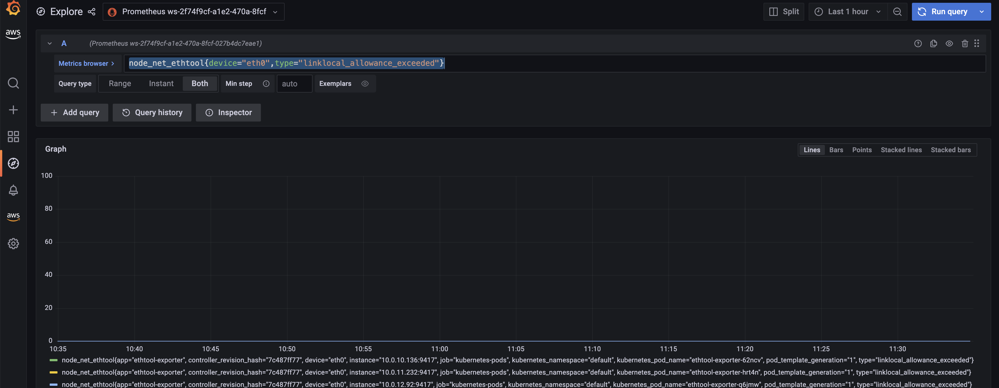

Monitoring CoreDNS traffic for DNS throttling issues¶
Running DNS intensive workloads can sometimes experience intermittent CoreDNS failures due to DNS throttling, and this can impact applications where you may encounter occasional UnknownHostException errors.
The Deployment for CoreDNS has an anti-affinity policy that instructs the Kubernetes scheduler to run instances of CoreDNS on separate worker nodes in the cluster, i.e. it should avoid co-locating replicas on the same worker node. This effectively reduces the number of DNS queries per network interface because traffic from each replica is routed through a different ENI. If you notice that DNS queries are being throttled because of the 1024 packets per second limit, you can 1) try increasing the number of CoreDNS replicas or 2) implement NodeLocal DNSCache. See Monitor CoreDNS Metrics for further information.
Challenge¶
- Packet drop happens in seconds and it can be tricky for us to properly monitor these patterns to determine if DNS throttling is actually happening.
- DNS queries are throttled at the elastic network interface level. So, throttled queries don't appear in the query logging.
- Flow logs do not capture all IP traffic. E.g. Traffic generated by instances when they contact the Amazon DNS server. If you use your own DNS server, then all traffic to that DNS server is logged
Capturing the metrics to identify throttling issues¶
An easy way to identify the DNS throttling issues in worker nodes is by capturing few key network performance metrics. The Elastic Network Adapter (ENA ) driver publishes network performance metrics from the instances where they are enabled. You can troubleshoot DNS throttling using the linklocal_allowance_exceeded metric. The linklocal_allowance_exceeded is number of packets dropped because the PPS of the traffic to local proxy services exceeded the maximum for the network interface. This impacts traffic to the DNS service, the Instance Metadata Service, and the Amazon Time Sync Service. Instead of tracking this event real-time, we can stream this metric to Amazon Managed Service for Prometheus and have them visualized in Amazon Managed Grafana
Prerequisites¶
- ethtool - Ensure the worker nodes have ethtool installed
- An AMP workspace configured in your AWS account. For instructions, see Create a workspace in the AMP User Guide.
- Amazon Managed Grafana Workspace
Deploying Prometheus ethtool exporter¶
The deployment contains a python script that pulls information from ethtool and publishes it in prometheus format.
kubectl apply -f https://raw.githubusercontent.com/Showmax/prometheus-ethtool-exporter/master/deploy/k8s-daemonset.yaml
Deploy the ADOT collector to scrape the ethtool metrics and store in Amazon Managed Service for Prometheus workspace¶
Each cluster where you install AWS Distro for OpenTelemetry (ADOT) must have this role to grant your AWS service account permissions to store metrics into Amazon Managed Service for Prometheus. Follow these steps to create and associate your IAM role to your Amazon EKS service account using IRSA:
eksctl create iamserviceaccount --name adot-collector --namespace default --cluster <CLUSTER_NAME> --attach-policy-arn arn:aws:iam::aws:policy/AmazonPrometheusRemoteWriteAccess --attach-policy-arn arn:aws:iam::aws:policy/AWSXrayWriteOnlyAccess --attach-policy-arn arn:aws:iam::aws:policy/CloudWatchAgentServerPolicy --region <REGION> --approve --override-existing-serviceaccounts
Let's deploy the ADOT collector to scrape the metrcis from the prometheus ethtool exporter and store it in Amazon Managed Service for Prometheus
The following procedure uses an example YAML file with deployment as the mode value. This is the default mode and deploys the ADOT Collector similarly to a standalone application. This configuration receives OTLP metrics from the sample application and Amazon Managed Service for Prometheus metrics scraped from pods on the cluster
curl -o collector-config-amp.yaml https://raw.githubusercontent.com/aws-observability/aws-otel-community/master/sample-configs/operator/collector-config-amp.yaml
In collector-config-amp.yaml, replace the following with your own values:
* mode: deployment
* serviceAccount: adot-collector
* endpoint: "
kubectl apply -f collector-config-amp.yaml
Once the adot collector is deployed, the metrics will be stored successfully in Amazon Prometheus
Configure alert manager in Amazon Managed Service for Prometheus to send notifications¶
Let's configure recording rules and alerting rules to check for the metric captured linklocal_allowance_exceeded. The linklocal_allowance_exceeded denotes the number of packets dropped due to PPS rate allowance exceeded for local services such as Route 53 DNS Resolver, Instance Metadata Service, Amazon Time Sync Service. You should receive alerts the moment it exceeds the value 0, meaning there shouldn't be any packet drops.
We will use the ACK Controller for Amazon Managed Service for Prometheus to provision the alerting and recording rules.
Let's deploy the ACL controller for the Amazon Managed Service for Prometheus service:
export SERVICE=prometheusservice
export RELEASE_VERSION=`curl -sL https://api.github.com/repos/aws-controllers-k8s/$SERVICE-controller/releases/latest | grep '"tag_name":' | cut -d'"' -f4`
export ACK_SYSTEM_NAMESPACE=ack-system
export AWS_REGION=us-east-1
aws ecr-public get-login-password --region us-east-1 | helm registry login --username AWS --password-stdin public.ecr.aws
helm install --create-namespace -n $ACK_SYSTEM_NAMESPACE ack-$SERVICE-controller \
oci://public.ecr.aws/aws-controllers-k8s/$SERVICE-chart --version=$RELEASE_VERSION --set=aws.region=$AWS_REGION
Run the command and after a few moments you should see the following message:
You are now able to create Amazon Managed Service for Prometheus (AMP) resources!
The controller is running in "cluster" mode.
The controller is configured to manage AWS resources in region: "us-east-1"
The ACK controller has been successfully installed and ACK can now be used to provision an Amazon Managed Service for Prometheus workspace.
Let's now create a yaml file for provisioning the alert manager defnition and rule groups.
Save the below file as rulegroup.yaml
apiVersion: prometheusservice.services.k8s.aws/v1alpha1
kind: RuleGroupsNamespace
metadata:
name: default-rule
spec:
workspaceID: <Your WORKSPACE-ID>
name: default-rule
configuration: |
groups:
- name: example
rules:
- record: metric:linklocal_allowance_exceeded
expr: node_net_ethtool{device="eth0",type="linklocal_allowance_exceeded"}
- alert: LinkLocalAllowanceExceeded
expr: node_net_ethtool{device="eth0",type="linklocal_allowance_exceeded"} > 0
labels:
severity: critical
annotations:
summary: Packets dropped due to PPS rate allowance exceeded for local services (instance {{ $labels.instance }})
description: "LinkLocalAllowanceExceeded is greater than 0"
Replace Your WORKSPACE-ID with the Workspace ID of the workspace you are using.
Let's now configure the alert manager definition. Save the below fie as alertmanager.yaml
apiVersion: prometheusservice.services.k8s.aws/v1alpha1
kind: AlertManagerDefinition
metadata:
name: alert-manager
spec:
workspaceID: <Your WORKSPACE-ID >
configuration: |
alertmanager_config: |
route:
receiver: default_receiver
receivers:
- name: default_receiver
sns_configs:
- topic_arn: TOPIC-ARN
sigv4:
region: REGION
message: |
alert_type: {{ .CommonLabels.alertname }}
event_type: {{ .CommonLabels.event_type }}
Replace You WORKSPACE-ID with the Workspace ID of the new workspace, TOPIC-ARN with the ARN of an Amazon Simple Notification Service topic where you want to send the alerts, and REGION with the current region of the workload. Make sure that your workspace has permissions to send messages to Amazon SNS.
Visualize ethtool metrics in Amazon Managed Grafana¶
Let's visualize the linklocal_allowance_exceeded within the Amazon Managed Grafana and build a dashboard. Configure the Amazon Managed Service for Prometheus as a datasource inside the Amazon Managed Grafana console. For instructions, see Add Amazon Prometheus as a datasource
Let's explore the metrics in Amazon Managed Grafana now: Click the explore button, and search for ethtool:

Let's build a dashboard for the linklocal_allowance_exceeded metric by using the query node_net_ethtool{device="eth0",type="linklocal_allowance_exceeded"}. It will result in the below dashboard.

We can clearly see that there were no packets dropped as the value is zero. You can further extend this by configuring alerts in Amazon Managed Grafana to send notifications to Slack, SNS, Pagerduty etc.